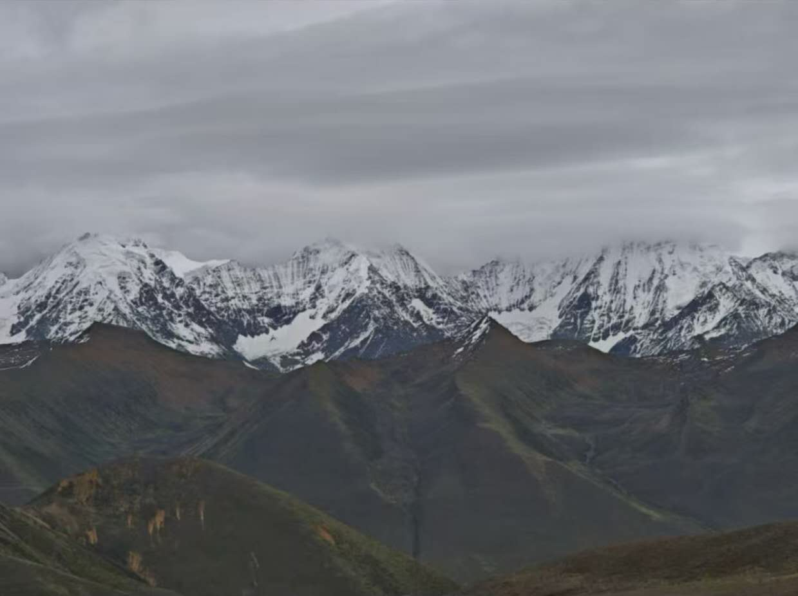

甘孜（ガンヅ）
甘孜（ガンヅ）チベット族自治州は、中国四川省の西部に位置し、豊かな自然とチベット文化が色濃く残る地域です。標高が高く、雄大な山々、草原、寺院が多く見られ、「中国のスイス」とも呼ばれるほどの美しい風景を誇ります。 有名な観光地には、稲城亜丁（インチョン・ヤーディン）や康定（カンディン）、色達五明仏学院（セルタ・ウーミン仏学院）などがあり、巡礼やトレッキング、文化体験を楽しむことができます。 また、チベット仏教の影響を受けた寺院や民族衣装、祭りなども見どころで、訪れる人々に深い感動と癒しを与えてくれます。